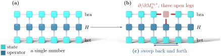
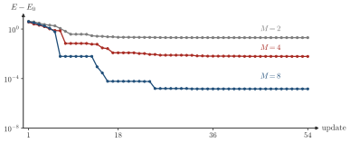

Advanced Quantum Materials 2027 · All lectures · Lecture notes
Session 7. Quantum Many-Body Entanglement and Tensor Networks
7.10 The variational principle and DMRG for the ground state
An ansatz is only useful if we can optimize it. We take the MPS matrices \(\{M_i^{s_i}\}\) as variational parameters and minimize the Rayleigh quotient
\[E[\Psi] = \frac{\langle \Psi | H | \Psi \rangle}{\langle \Psi | \Psi \rangle}, \tag{7.11}\]
or, in an equivalent way, we introduce a Lagrange multiplier \(\lambda\) for the normalization and minimize \(\langle \Psi|H|\Psi\rangle - \lambda\left(\langle\Psi|\Psi\rangle - 1\right)\) with respect to every matrix in the network. In the diagrams, the derivative with respect to one tensor in the network, for example the matrix at site \(k\), corresponds to “erasing” that tensor from the diagram. The reason is that each tensor appears once in the bra layer and once in the ket layer, so with the other tensors fixed the energy is a quadratic form in that tensor, and it is linear in the bra copy alone. When we erase the bra tensor of site \(k\) from both the numerator and the denominator diagrams, what is left is a generalized eigenvalue problem for that single tensor, which becomes an ordinary one when the other tensors are chosen orthonormal. It involves an effective, reduced Hamiltonian that acts on the indices of site \(k\), and its ground eigenvector is the locally optimal replacement for \(M_k^{s_k}\). Figure 7.5 shows this erasure and the sweep that follows from it.

This suggests an iterative algorithm. We fix every tensor except the one of site \(1\), solve the local eigenvalue problem there, and update \(M_1^{s_1}\) with the resulting eigenvector. Then we move to site \(2\), fix everything else, solve the local eigenvalue problem there, and update. We continue sweeping through the chain, site by site, until the energy stops decreasing. This sweeping procedure is the density matrix renormalization group (DMRG) algorithm. Its efficiency comes from the property of (7.11) that we used to build it. At every step we optimize only one matrix at a time, which is a small linear-algebra problem that we can solve, instead of searching for the ground state in the full exponentially large space at once. In a small chain we can follow the energy after every update, which is what Schematic 7.8 does.

When DMRG updates one tensor with all the others fixed, what happens to the energy (7.11)?
Show the answers
- A. ✗ False
This is false. The old tensor is one of the candidates of the local minimization with energy \(E_\text{old}\). The minimum is then \(E_\text{new}\le E_\text{old}\), so an increase is impossible at any step.
The energy error after each update of a sweep never goes up, for three bond dimensions. - B. ✓ True
This is true. The old tensor is one of the candidates of the local minimization, so the new one is at least as good. The energy (7.11) goes down or stays the same, and this is why the sweeps converge.
- C. ✗ False
This is false. The bond dimension \(M\) is fixed during the sweeps. Starting from a random MPS with energy close to zero, the first update already lowers the energy at the same \(M\).
The local eigenvalue problem at one bulk site of a spin-1/2 chain has a matrix of size
Show the answers
- A. ✓ True
This is true. The open legs of the erased tensor are two virtual bonds of dimension \(M\) and one physical index of dimension \(2\). The matrix acts on these \(2M^2\) numbers, and \(L\) does not appear.
- B. ✗ False
This is false. This is the exact diagonalization, which needs \(2^{40}\approx10^{12}\) numbers for \(L=40\). For \(M=100\) the local problem has only \(2M^2=2\times10^4\) numbers.
- C. ✗ False
This is false. This is the size at the end of the chain, where the tensor has one bond and one physical leg. At a bulk site there are two bonds, so for \(M=100\) the size is \(2\times10^4\) and not \(200\).
Notebook check-in: session7.ipynb, “Low energy excitations of a Heisenberg model” (Core)
In this exercise you look at the matrix elements between the DMRG ground state and the first excited state of a Heisenberg chain, meaning what the sweeping procedure of Section 7.10 finds one level above the state that directly minimizes (7.11).
Try it. Plot the matrix element between the ground state and the first excited state along the chain, for L=20 and for L=12. Is the excitation localized on a few sites or spread over the chain? Then set Bz=0 and see whether the profile changes.